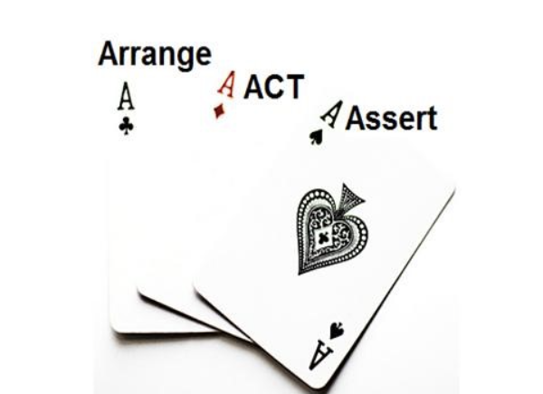
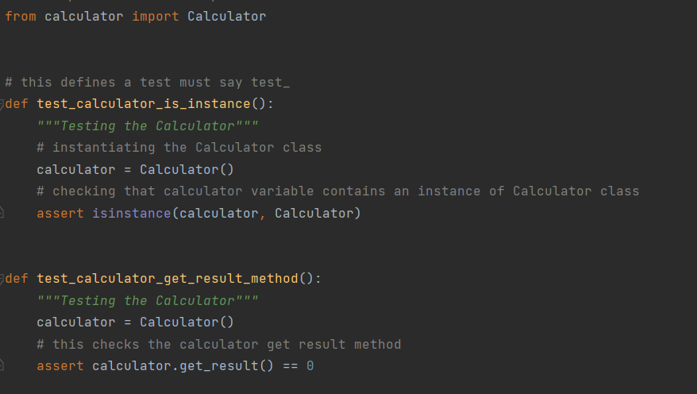
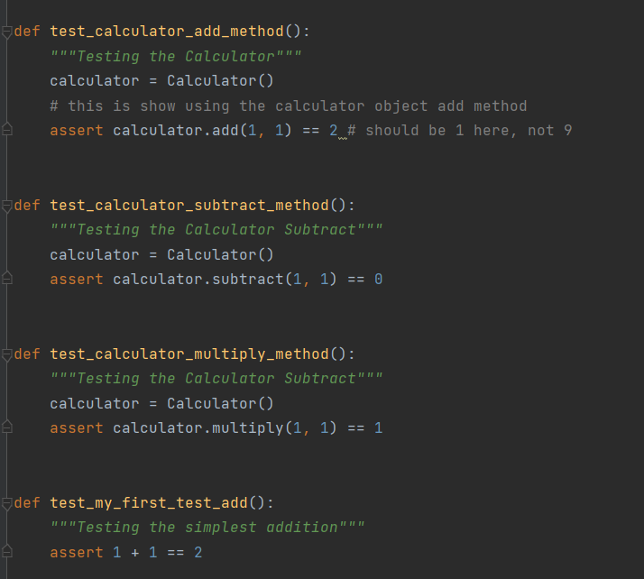
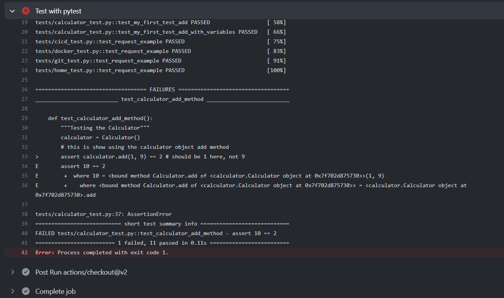

What is AAA Testing?
The AAA pattern is a pattern for structuring tests. It breaks each test down into three parts – Arrange, Act, and Assert – where each part is a step leading to the next. The arrange step sets up the test’s input values. The act step prompts the primary function being tested. And finally, the assert step verifies that the output of the function is what was expected.

The image on the left is an example of "Arrange" and "Act" pattern in AAA testing. For the arrange section, one only have code required to setup that specific test. Here objects would be created, mocks setup (if in use) and potentially expectations would be set. Then there is the Act, which should be the invocation of the method being tested. Here, the calculator was first instantiated which refers to the calculator class being constructed: "test_calculator_is_instance". On the other hand, the Act pattern in this case is "test_calculator_get_result_method" which is the invocation of the method being tested.
An assertion is a boolean expression at a specific point in a program which will be true unless there is a bug in the program. Assertion in AAA testing is defined as an expression, which encapsulates some testable logic specified about a target under test. The advantages of using assertion are:
- It is used to detect subtle errors which might go unnoticed.
- It is used to detect errors sooner after they occur.
- Make a statement about the effects of the code that is guaranteed to be true.
The image below shows an example of "assert" statement in the calculator. It reflects upon several factors listed below:

- The calculator has addition, subtraction and multiplication method being tested
- The assertion of numbers being placed where the test results will be based upon its individual method.
- If the results indicate the operations being done between two numbers is wrong, an error will occur and the runtest will fail.
Why testing is important?
Testing is a framework that allows users to write test codes using Python programming language. It helps programmers to write simple and scalable test cases for databases, APIs, or UI. PyTest is mainly used for writing tests for APIs. It helps to write tests from simple unit tests to complex functional tests.
Some of the advantages of testing are it is very easy to start with because of its simple and easy syntax. It can run tests in parallel and run a specific test or a subset of tests. Testing automatically detect errors, skip tests and allows a user to better track the lines of code. Testing is an essential part of building software. When it comes to production-ready applications it is necessary to have a reliable and well-tested code with as few bugs as possible. There are many methods available for testing codes. Unit-testing involves the testing of specific modules or pieces of code within the app. When writing tests the programmers or developers would most certainly want to follow some sort of pattern like AAA testing to write well-structured, readable tests.
Below is an example of a failed runtest.

In the addition method of calculator, a possible error occurred where "9" was placed instead of "1" in the operations. Therefore, the test result on the image indicates that "1+9 == 10" and not "2". As a result, line-34 refers the programmers to assert "10".
A programmer has to deal with thousands of lines of code each day. Testing is the most convenient method to identify errors and fix them in no time. Testing is an essential tools for programmers to debug and check for all possible errors in the code. A programmer Daniel Read claimed, "A true professional does not waste the time and money of other people by handing over software that is not reasonably free of obvious bugs; that has not undergone minimal unit testing; that does not meet the specifications and requirements; that is gold-plated with unnecessary features; or that looks like junk.”